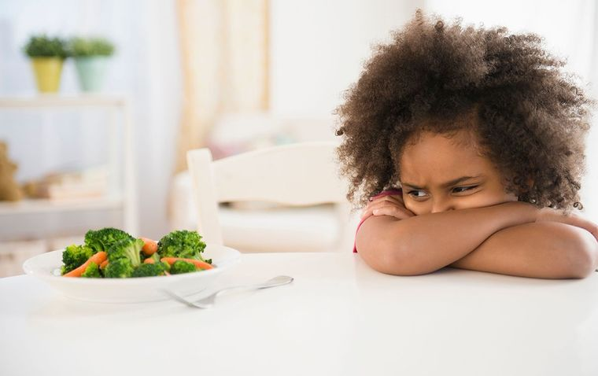

Broccoli is an edible green plant in the cabbage family whose large flowering head is eaten as a vegetable. Broccoli has large flower heads, usually green in color, arranged in a tree-like structure branching out from a thick, edible stalk. Broccoli is often boiled or steamed but may be eaten raw. a 100 gram serving of raw broccoli provides 34 kcal and is an excellent source (20% or higher of the Daily Value, DV) of vitamin C and vitamin K. Raw broccoli also contains moderate amounts (10–19% DV) of several B vitamins and the dietary mineral manganese, whereas other essential nutrients are in low content. Broccoli has low content of carbohydrates, protein, fat, and dietary fiber.
It has happen to us at least once in our lifetime; You're having a conversation with someone, whether it's a friend, family member, co-worker, someone you just met on the street. Somewhere in the conversation, they say a word that begins with the letter 'H' and then all of sudden, you catch a whiff on their breath after they had broccoli and this happens...
Despite its so-called health benefits, it definitely has its downsides, such as inhaling its garbage-aroma smell. Broccoli can give anyone who eats it instant breath. This can cause a lot of awkward social interactions.
In addition to having bad breath, it can cause gas to those who eat it! Just imagine having gas in the most inopportune moment, such as having dinner with family or having quality time with that special person, and then gas comes along. At that time, you'd either have to hold it in the best way you can, or take the chance, let it all out & pray to God that it doesn't stink.

To make broccoli worse, it does not have any sugar!! You can't have it when you have a craving for sweets. You can't have it for a late night snack (Well you can, but you experience the above given). And you definitely can't give it to kids when they want something sweet.